Pengasuh terpercaya untuk liburan keluarga Anda di Bali
Baby sitter terlatih P3K yang datang ke hotel atau vila Anda — supaya Anda bisa menikmati makan malam, spa, atau sunrise dengan tenang.
- Diseleksi langsung
- Kenali pengasuh dulu
- Garansi pengganti
- Bayar setelah sesi
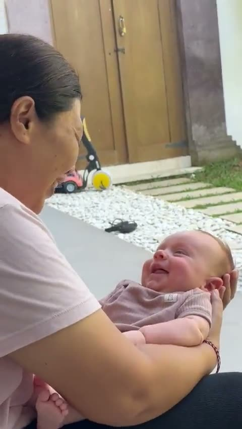
Pengasuhan yang pas untuk liburan Anda
Dari satu malam hingga satu musim penuh di Bali.

Baby sitter per jam
Makan malam, spa, les surfing — mulai 6 jam.

Pengasuh seharian
Pantai, kolam, tidur siang dan makan — Anda benar-benar berlibur.

Pengasuh malam
Menidurkan, menyusui botol, dan bangun malam — Anda bisa tidur nyenyak.

Pengasuh bayi & newborn
Pengasuh berpengalaman merawat bayi di bawah 12 bulan.

Pengasuh saat jalan-jalan
Ikut menemani keluarga Anda saat day trip dan ke pulau sekitar.

Baby sitter di hotel & vila
Kami datang ke hotel atau vila Anda di seluruh Bali.

Pernikahan & acara
Pojok anak dan baby sitter untuk perayaan Anda.

Pengasuh jangka panjang
Untuk keluarga yang tinggal di Bali.
Perlengkapan bayi & pagar kolam
Tidak perlu bawa box bayi dan stroller di pesawat. Kami antar semuanya ke vila Anda.
Sewa pagar kolam renang untuk vila Anda di Bali
Kebanyakan kolam vila di Bali tidak berpagar. Kami pasang pagar pengaman anak yang bisa dilepas di sekeliling kolam sebelum Anda tiba — dan membongkarnya saat Anda pulang.
- Pagar jaring lepas-pasang, tinggi ~1,2 m
- Pintu menutup dan terkunci otomatis
- Dipasang di sepanjang tepi kolam
- Dibongkar saat check-out, tanpa kerusakan
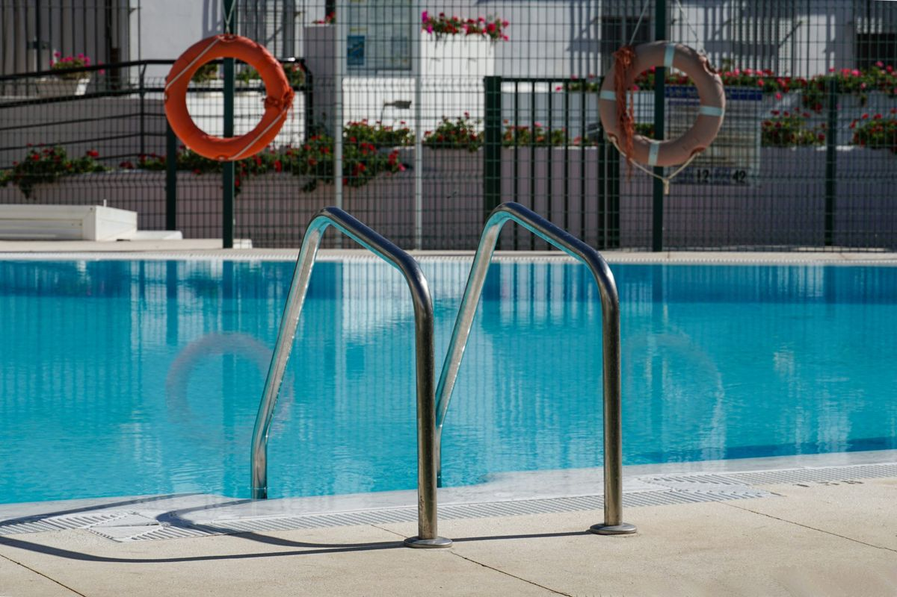
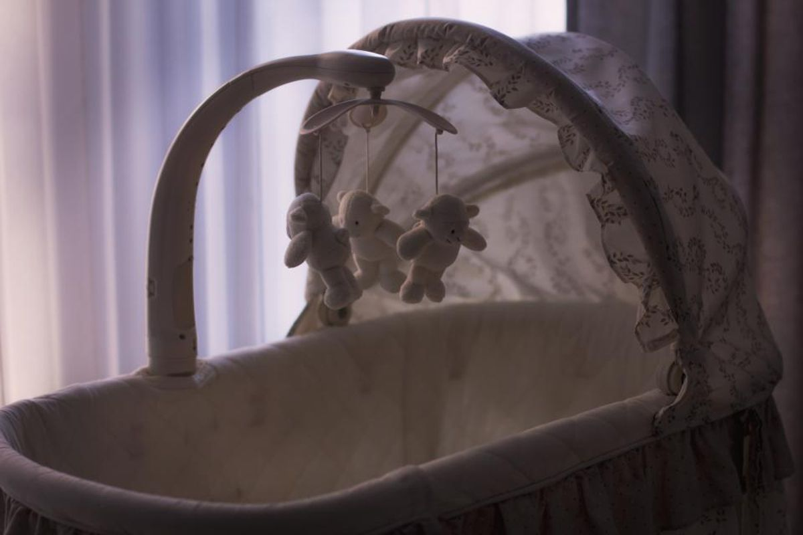
🛏️ Box bayi & tidur
Box bayi ukuran penuh, travel cot, dan bassinet dengan seprai bersih.
- Box bayi ukuran penuh dengan kasur
- Travel cot / playpen
- Bassinet untuk newborn
- Tirai blackout portabel
👶 Stroller & gendongan
Stroller travel ringan, stroller kembar, dan gendongan bayi.
- Stroller travel ringkas
- Stroller all-terrain untuk jalan pantai
- Stroller kembar
- Gendongan bayi ergonomis
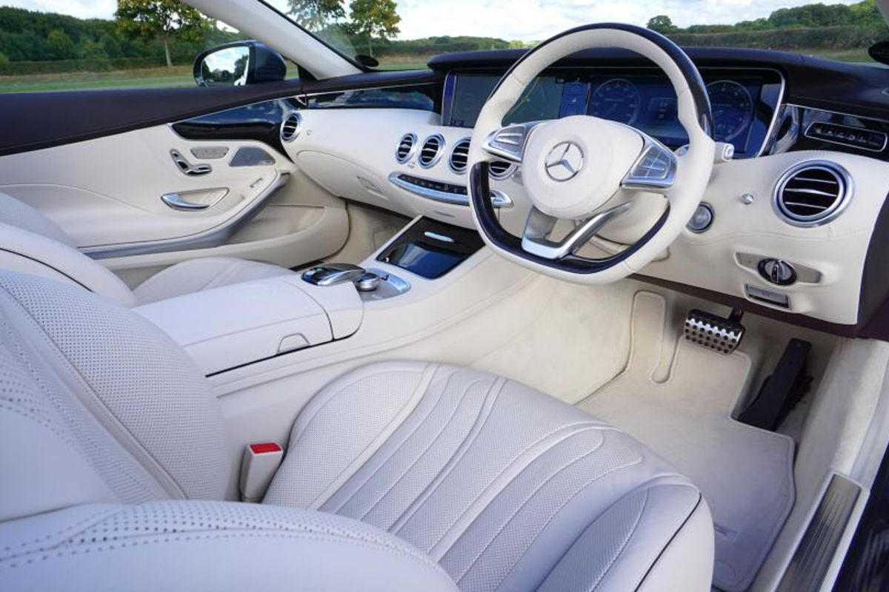
🚗 Car seat
Car seat bayi, convertible, dan booster — kami pasangkan untuk Anda.
- Infant capsule (0–13 kg)
- Car seat convertible (0–18 kg)
- Car seat menghadap depan (9–25 kg)
- Booster (15–36 kg)
Pesan cukup dengan tiga pesan
Kirim pesan via WhatsApp
Beri tahu tanggal, jam, usia anak, dan tempat Anda menginap.
Kenali pengasuh Anda
Kami kirim profil dan perkenalan singkat. Ingin video call dulu? Tinggal minta.
Nikmati waktu Anda
Pengasuh datang ke hotel atau vila. Update foto via WhatsApp, bayar setelah sesi.
Area layanan kami di Bali
Pengasuh kami datang ke hotel, vila, dan rumah di seluruh Bali Selatan dan Ubud.
 SanurAir tenang yang terlindung karang dan jalur pantai yang datar menjadikan Sanur bagian Bali paling mudah untuk bayi dan balita.
SanurAir tenang yang terlindung karang dan jalur pantai yang datar menjadikan Sanur bagian Bali paling mudah untuk bayi dan balita.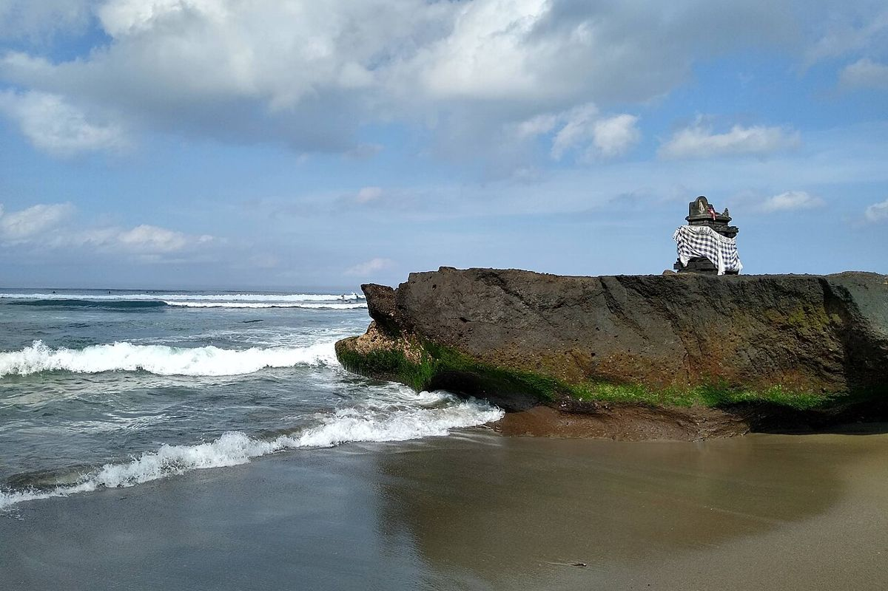
CangguSurfing, kafe, dan vila dengan kolam pribadi — Canggu cocok untuk keluarga yang ingin liburan aktif dan ramai di Bali.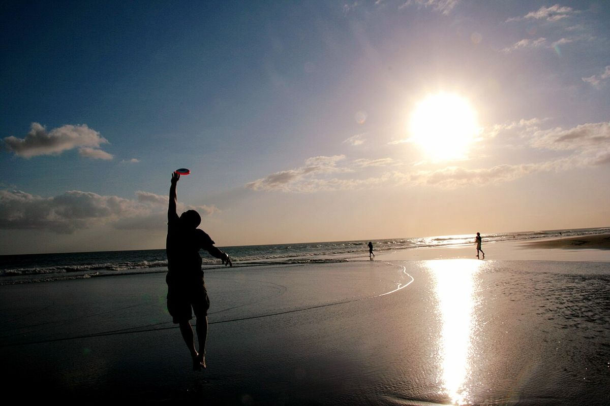
SeminyakVila butik, beach club, dan restoran — Seminyak adalah basis stylish di Bali untuk keluarga yang suka keluar. Kuta & LegianDekat bandara dan Waterbom, Kuta dan Legian jadi persinggahan pertama yang mudah bagi keluarga yang baru tiba di Bali.
Kuta & LegianDekat bandara dan Waterbom, Kuta dan Legian jadi persinggahan pertama yang mudah bagi keluarga yang baru tiba di Bali.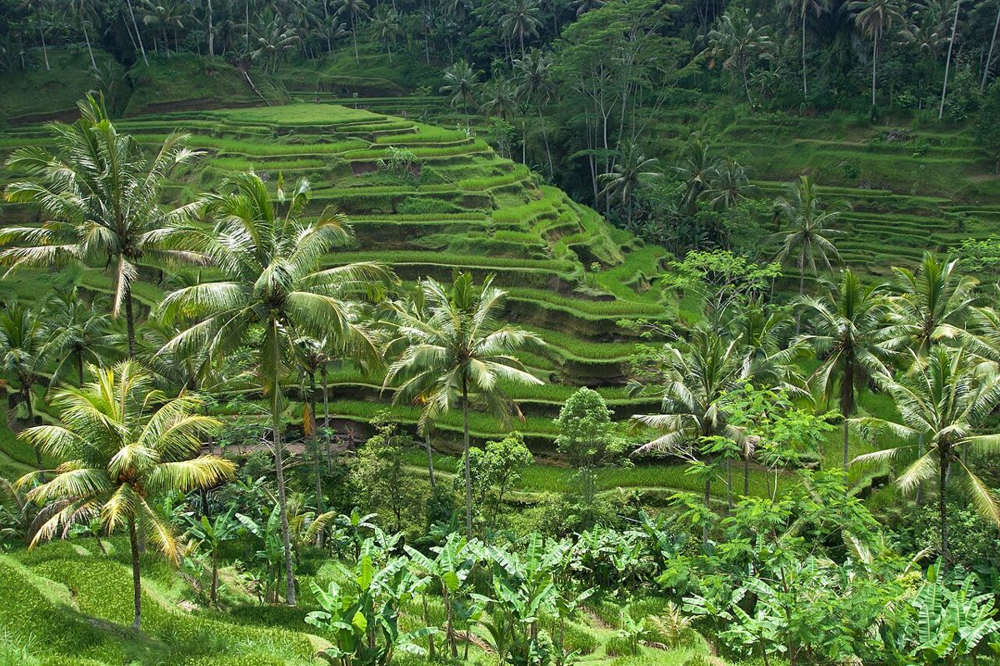
UbudSawah terasering, vila di tengah hutan, dan udara lebih sejuk — Ubud adalah jantung budaya Bali dan tempat yang ramah untuk anak.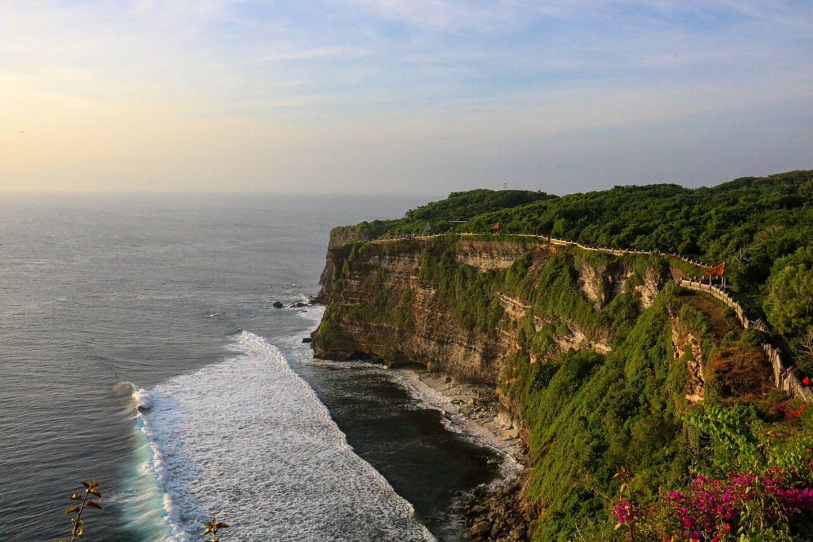
UluwatuResort di atas tebing, sunset terkenal, dan pantai tersembunyi — Uluwatu adalah sisi Bali yang paling dramatis.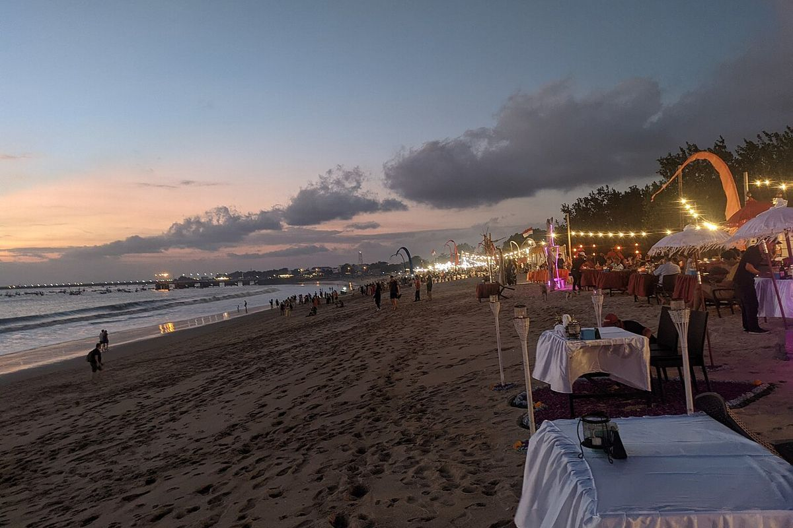
JimbaranTeluk luas yang tenang dengan makan malam seafood di atas pasir — dan hanya 15 menit dari bandara.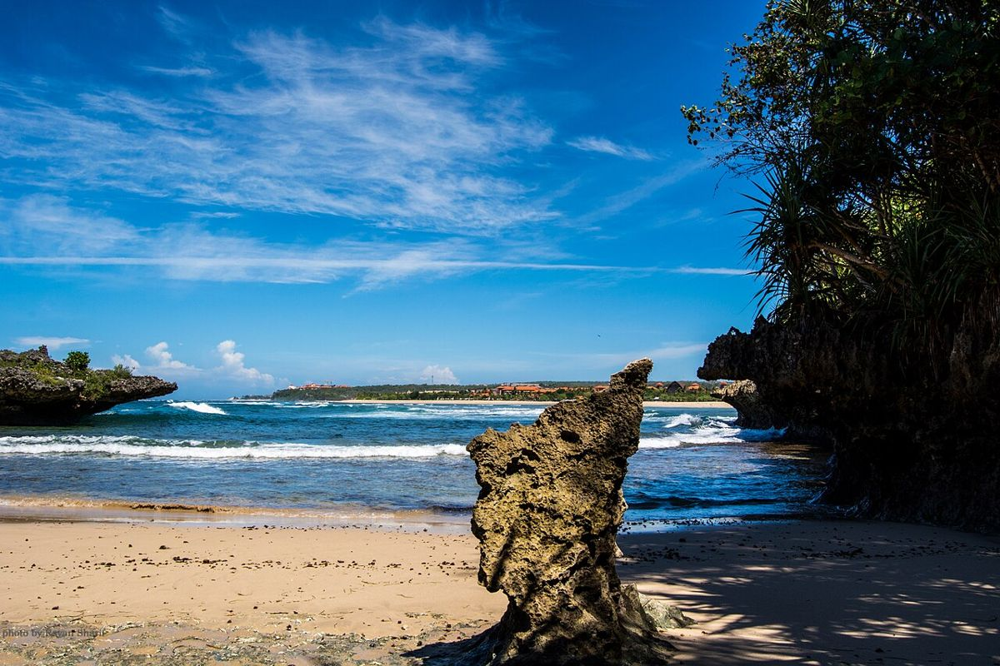
Nusa DuaResort tertata rapi, pantai tenang terlindung karang, dan kids' club — Nusa Dua adalah kawasan resort keluarga klasik di Bali.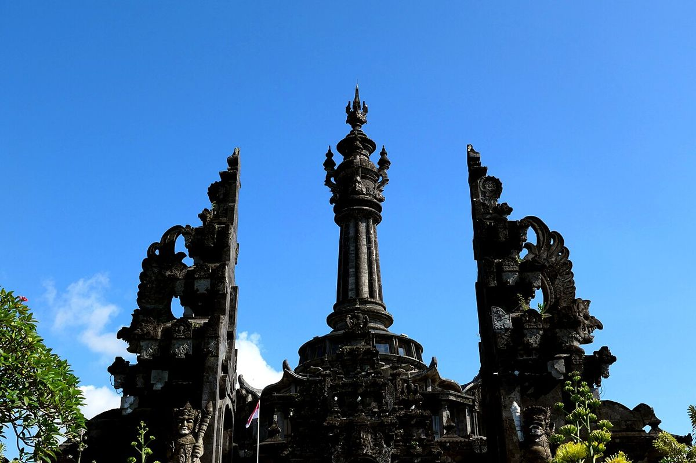
DenpasarIbu kota Bali, tempat banyak keluarga ekspat dan lokal tinggal dekat rumah sakit dan sekolah internasional.Kenali pengasuh Anda sebelum ia datang
Tidak ada orang asing di depan pintu Anda. Sebelum pesanan dikonfirmasi, Anda menerima:
- Foto, nama, dan lama pengalamannya
- Bahasa yang dikuasai dan usia anak yang paling cocok
- Video sapaan singkat via WhatsApp
- Video call singkat jika Anda mau
7 tahun · bayi & balita
🗣 English · Bahasa
💛 Suka: berenang, menggambar, bernyanyi
Cara kami menyeleksi setiap pengasuh
Enam tahap sebelum pengasuh bertemu keluarga pertamanya. Tanpa jalan pintas.
Cek identitas & alamat
Paspor atau KTP diverifikasi, alamat rumah dikonfirmasi.
Dua referensi keluarga
Kami sendiri yang menelepon keluarga sebelumnya — bukan sekadar membaca surat.
Wawancara langsung
Tatap muka, dengan simulasi situasi pengasuhan dan tes bahasa Inggris.
P3K & CPR anak
Sertifikat berlaku, diperbarui sesuai jadwal. Bisa kami tunjukkan.
Aturan keamanan air
Aturan pengawasan di kolam dan pantai ditandatangani setiap pengasuh.
Shift percobaan & evaluasi
Shift pertama ditinjau; keluarga menilai setiap pesanan.
Garansi pengganti
Jika pengasuh Anda sakit atau berhalangan, kami kirim pengasuh lain yang sudah diseleksi — atau Anda tidak perlu membayar. Malam Anda tetap aman.
Yang dibawa pengasuh
Anak-anak tidak sekadar diawasi — mereka juga bersenang-senang.
Pertanyaan dari para orang tua
Seberapa cepat saya bisa memesan?
Sering kali di hari yang sama. Untuk malam hari dan musim ramai (Juli–Agustus, Natal) hubungi kami 2–3 hari sebelumnya.
Apakah pengasuh bisa berbahasa Inggris?
Ya — semua pengasuh lancar berkomunikasi dalam bahasa Inggris, dan tentu bahasa Indonesia. Kami jujur soal tingkat kemampuan tiap pengasuh.
Apakah pengasuh terlatih P3K?
Setiap pengasuh memiliki sertifikat P3K & CPR anak yang masih berlaku. Bisa kami tunjukkan sebelum Anda memesan.
Di mana saja area layanannya?
Seluruh Bali Selatan dan Ubud — Sanur, Canggu, Seminyak, Kuta, Jimbaran, Uluwatu, Nusa Dua, Denpasar, dan Ubud. Hotel, vila, dan rumah.
Bagaimana cara membayar?
Tunai (IDR) atau transfer bank setelah sesi. Tanpa DP untuk pesanan satu kali.
Bisakah pengasuh merawat bayi baru lahir?
Bisa. Kami pilihkan pengasuh yang memang berpengalaman merawat newborn.
Bagaimana jika pengasuh membatalkan?
Kami kirim pengasuh pengganti dengan pengecekan yang sama. Jika tidak bisa, Anda tidak perlu membayar.
Bisakah saya melihat pengasuh sebelum memesan?
Bisa. Anda menerima foto, pengalaman, dan video sapaan singkatnya, dan bisa meminta video call.
Sanur bersama anak
Panduan lokal dari orang-orang yang setiap hari berada di pantai ini.
Pengasuhan Anak di Sanur
25 panduan
Sanur bersama Anak: Aktivitas Seru
30 panduan
Menginap bersama Keluarga di Sanur
15 panduan
Kesehatan & Keamanan Anak di Bali
20 panduan
Kuliner Keluarga di Sanur
12 panduan
Logistik Perjalanan bersama Anak
18 panduan
Day Trip dari Sanur bersama Anak
15 panduan
Kehidupan Keluarga Ekspat di Sanur
15 panduan
Butuh pengasuh di Bali?
Kirim tanggal Anda — kami balas dengan pengasuh yang tersedia.
Kirim pesan via WhatsApp